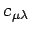
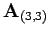
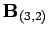

Inhalt Index DeskTop Bronstein

 Lineare Algebra Matrizen Rechenoperationen mit Matrizen Multiplikation zweier Matrizen
Lineare Algebra Matrizen Rechenoperationen mit Matrizen Multiplikation zweier Matrizen


Für die praktische Durchführung der Matrixmultiplikation gemäß verwendet man der größeren Übersichtlichkeit halber das FALKsche Schema (obere Abbildung).
Das Element  der Produktmatrix  erscheint genau im Kreuzungspunkt der
erscheint genau im Kreuzungspunkt der  -ten Zeile von
-ten Zeile von  mit der
mit der  - ten Spalte von
- ten Spalte von  .
.
| Beispiel |
|
Die Multiplikation zweier Matrizen  und  erfolgt mit Hilfe des FALKschen Schemas (untere Abbildung). |